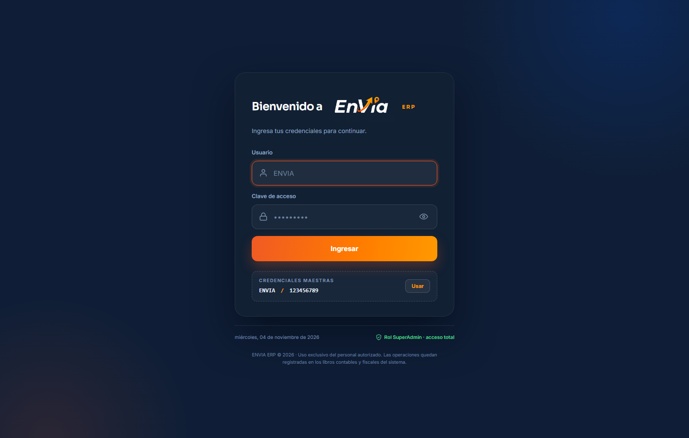
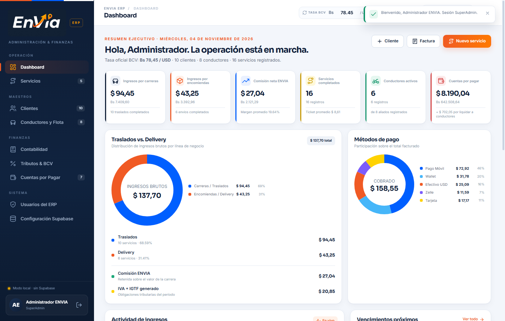

Ir a sección
Cómo iniciar sesión en ENVIA ERP
ENVIA ERP se abre directamente desde index.html en Chrome, sin servidor y sin conexión a internet. La sesión dura 12 horas.
Abrir la aplicación
index.html o arrástralo a una ventana de Google Chrome. La aplicación carga en modo local (file://).Ingresar credenciales
- 1Usuario: ENVIA
- 2Clave de acceso: 123456789

Panel de control y KPIs
Resumen de ingresos, servicios, conductores y cuentas por pagar. Todos los montos contables se expresan en Bolívares (VES) usando la tasa BCV configurada.
Ingresar al Dashboard
KPIs principales
- •Ingresos por carreras (USD y VES)
- •Ingresos por encomiendas (USD y VES)
- •Comisión neta ENVIA
- •Servicios completados
- •Conductores activos
- •Cuentas por pagar pendientes
Gráficos y tablas
- •Traslados vs. Delivery: distribución de ingresos por línea de negocio.
- •Métodos de pago: participación de Pago Móvil, Wallet, Efectivo USD, Zelle y Tarjeta.
- •Próximos vencimientos: facturas de proveedores por pagar.

Clientes de ENVIA
El cliente es la clave primaria de facturación. Su identificador es la Cédula / RIF, formato V-12345678, E-12345678 o J-123456789.
Crear un cliente
- 1Ve a Maestros → Clientes y presiona Nuevo cliente.
- 2Completa Cédula/RIF, nombres, apellidos, teléfono, correo y dirección.
- 3Define el estatus (Activo, Suspendido, Pendiente de Verificación, Corporativo).
- 4Opcional: saldo Wallet en USD y VES.
- 5Presiona Guardar.
Editar un cliente
- 1En la lista de clientes, haz clic sobre el nombre del cliente.
- 2Modifica los campos deseados (la Cédula/RIF no se puede cambiar una vez creado).
- 3Presiona Guardar.
| Formato | Ejemplo | Tipo |
|---|---|---|
| Venezolano | V-12345678 | Persona natural |
| Extranjero | E-12345678 | Extranjero con cédula |
| Jurídico | J-123456789 | Empresa / persona jurídica |
Aliados operativos y vehículos
Los conductores reciben liquidaciones por los servicios realizados. Su identificador es la Cédula / RIF.
Registrar un conductor
- 1Ve a Maestros → Conductores y Flota → Nuevo conductor.
- 2Ingresa cédula/RIF, nombres, apellidos, teléfono y correo.
- 3Define tipo de servicio, placa, marca, modelo, año y color del vehículo.
- 4Configura banco, teléfono y cédula de Pago Móvil, y cuenta bancaria.
- 5Asigna el porcentaje de comisión (ej. 20%).
- 6Presiona Guardar.
Estado de documentos
Carreras y Encomiendas
Cada servicio genera automáticamente asiento de ingreso (base + IVA + IGTF en VES), liquidación al conductor e incremento de contadores.
Crear un servicio
- 1Ve a Operación → Servicios → Nuevo servicio.
- 2Selecciona tipo: Carrera o Encomienda.
- 3Elige cliente y conductor (ambos deben existir en sus maestros).
- 4Ingresa origen, destino, kilómetros y duración en minutos.
- 5Ingresa la base en USD y elige el IVA % (16 general, 8 reducido, 0 exento).
- 6El IGTF (3%) se aplica automático para Efectivo USD y Zelle.
- 7Elige método de pago e ingresa número de factura y control.
- 8Presiona Guardar.
Asientos, libros y estados financieros
ENVIA ERP lleva contabilidad de partida doble en Bolívares (VES). El catálogo de cuentas sigue codificación jerárquica: 1 Activos · 2 Pasivos · 3 Patrimonio · 4 Ingresos · 5 Costos · 6 Gastos.
Plan de cuentas
Libros disponibles
- •Libro Diario
- •Libro Mayor
- •Balance de Comprobación
- •Estado de Resultados
- •Balance General
- •Libro de Ventas (SENIAT)
- •Libro de Compras (SENIAT)
IVA, IGTF, ISLR y tasa BCV
Desde Tributos & BCV configuras los parámetros fiscales. Nunca se hardcodean en la lógica; son editables.
| Parámetro | Valor por defecto | Nota |
|---|---|---|
| Tasa BCV (Bs / USD) | Editable | Conversión USD → VES |
| IVA general | 16% | Operaciones normales |
| IVA reducido | 8% | Actividades específicas |
| IVA exento | 0% | Operaciones exentas |
| IGTF | 3% | Pagos en divisas o criptoactivos |
| Unidad Tributaria (UT) | 90 VES | Base para sustraendo ISLR |
Retención de IVA
- •75% para personas naturales residentes.
- •100% para personas jurídicas domiciliadas y no domiciliadas.
- •Se calcula sobre el IVA facturado y se registra en Retenciones de IVA por Pagar.
Retención ISLR (Decreto 1.808)
| Tipo | Tarifa | Sustraendo |
|---|---|---|
| PN_RES | 3% | 10 UT |
| PJ_DOM | 5% | 0 UT |
| PN_NORES / PJ_NODOM | 34% | 0 UT |
Proveedores, facturas y pagos
Gestión de compras a proveedores con retenciones automáticas de IVA e ISLR.
Registrar un proveedor
- 1Ve a Finanzas → Cuentas por Pagar → Proveedores.
- 2Ingresa RIF (clave primaria), razón social, dirección y contacto.
- 3Define el porcentaje de retención de IVA (75% o 100%).
- 4Presiona Guardar.
Registrar una factura de compra
- 1Selecciona proveedor, número de factura, número de control, fechas y concepto.
- 2El sistema calcula automáticamente IVA, IGTF, retención de IVA e ISLR.
- 3Se genera el asiento de compra y el comprobante de retención (formato AAAAMM + 8 dígitos).
Registrar un pago
- 1En la lista de facturas, selecciona una pendiente y presiona Pagar.
- 2Ingresa monto, método de pago y referencia.
- 3El sistema actualiza el saldo y genera el asiento de pago.
Trazabilidad de cambios
Cada vez que un usuario guarda o borra un registro, el sistema lo graba con nombre de usuario, fecha y hora.
Qué se registra
- •Usuario que hizo el cambio
- •Fecha y hora exacta de la modificación
- •Acción: crear, actualizar, eliminar, pagar, liquidar, registrar asiento, etc.
- •Módulo afectado (clientes, servicios, CxP, usuarios, tributos, etc.)
- •Detalle de lo que cambió
- •Referencia (ID del registro modificado)
Filtros y exportación
Roles, accesos y seguridad
ENVIA ERP tiene 4 roles exactos. El usuario maestro ENVIA es SuperAdmin y no se puede eliminar ni cambiar de rol.
| Rol | Acceso | Escritura |
|---|---|---|
| SuperAdmin | Todos los módulos | Sí |
| Contador / Fiscal | Dashboard, servicios, clientes, conductores, contabilidad, fiscal, CxP | Sí |
| Tesorero / CxP | Dashboard, servicios, clientes, conductores, CxP, fiscal | Sí |
| Auditor / Operaciones | Dashboard, servicios, clientes, conductores, contabilidad, fiscal, CxP | No (solo lectura) |
Crear un usuario
- 1Ve a Sistema → Usuarios del ERP → Nuevo usuario.
- 2Asigna usuario, clave, nombre, correo y rol.
- 3Presiona Guardar.
Sincronización opcional en la nube
Supabase es opcional. La aplicación funciona completamente en local con localStorage y archivos en Data URL.
Conectar un proyecto real
- 1Crea un proyecto en Supabase.
- 2Ejecuta
sql/supabase_schema.sqlen tu proyecto (crea tablas, buckets, triggers, índices y políticas RLS). - 3En ENVIA ERP, ve a Configuración Supabase e ingresa la URL y la
anon key. - 4Usa los botones de Sincronizar o Pull para subir/bajar datos.
documentos-clientes, documentos-conductores, fotos-vehiculos.anon; en producción restricción a usuarios autenticados y propietarios.Exportar e importar datos
Los respaldos se exportan/importan en JSON y validan su estructura antes de restaurar.
Exportar respaldo
Importar respaldo
Reglas irrenunciables de ENVIA ERP
Estas reglas rigen toda operación y no se pueden saltar.
- 1Partida doble: todo asiento debe cumplir DEBE = HABER (tolerancia 0,01 VES).
- 2Moneda funcional: VES. Los montos operativos se capturan en USD y se convierten con la tasa BCV.
- 3Claves primarias: clientes y conductores usan
cedula_rif; proveedores usanrif. Sin duplicados. - 4No eliminar con dependencias: no se puede borrar cliente con servicios, ni proveedor con facturas, ni cuenta con movimientos.
- 5Documentos: ruta
/{bucket}/{cedula_rif}/{tipoDocumento}_{timestamp}.{ext}, máximo 10 MB, tipos PDF/JPG/PNG/WEBP. - 6Usuario maestro:
ENVIA/123456789, rol SuperAdmin, no editable.